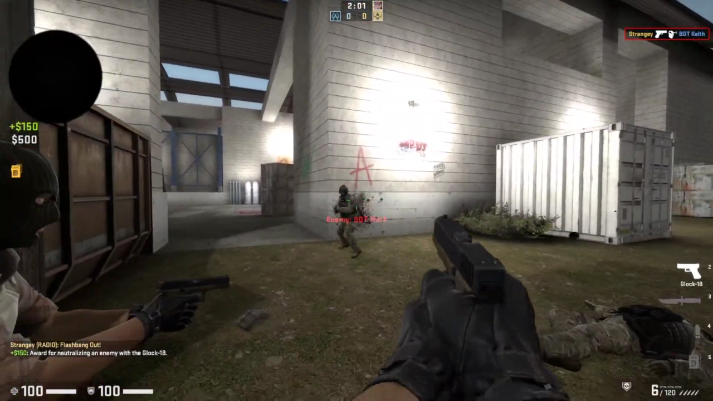

CSGO Wingman


Wingman is a 2v2 gamemode within Counter Strike: Global Offensive. The goal is similar to the classic gamemode where the terrorists (T’s) try to plant the bomb and have it explode or kill all of the counter-terrorists (CT’s). The CT’s must defuse the bomb if planted or kill the T’s before it is planted. The biggest difference is the size of maps and maps having one bomb site. This project was a part of my Level Design 2 class at RIT.
Early Design
Wingman maps differ from the 5v5 pool of maps and most are community made or edits of current 5v5 maps. I decided to look at the active pool of maps as well as the recent community-made ones at the time to get a better idea of what trends there are and what could make my map unique. A lot of map makers tend to do a 2-3 lane approach for the T-side entries to the bombsite. This will allow for different approaches each round and allows for split entries or 2-man commits to a specific side of the bomb site.
For my map, I wanted to center everything around the bombsite and allow for quicker entries onto the site. The site itself is very open and doesn’t have any close safe spots to plant if there isn’t control of multiple areas. The best cover is planting near the ramp closer to the CT side which can give a good after-plant position for the Ts by giving access to the high ground and the connection routes to the outsides of the site. The map includes verticality to create unique angles for the CTs to play while defending unless the Ts push up on the elevated route.
Creation Process
Creating CSGO maps can be a major pain to work with due to the Hammer editor having some issues and being dated for its time. I ended up using Hammer++, a modded extension to the Hammer editor which had plenty of improvements over the original. Getting the greymap into the game was fairly simple, but resizing some areas took more time. My biggest concern was determining a theme to fit the central bombsite, so I went with a simple approach of having a warehouse.
Some of the entries to the site were changed as well as cover in certain areas when creating the map in game. Getting a better view in-game of the different angles and how much space there is helped determine what needed to be adjusted especially before any initial playtests. The biggest changes came to the spawns as more space was needed to complete the warehouse structure and to also adjust timings on where the point of contact will be in each route to the site.
Playtesting on LAN showed that some angles were too powerful to hold on the CT side which got tweaked with some more cover or existing cover being moved. There were not many ways to use utility from outside areas of the bomb site, so more holes/windows were created in the ceilings to allow for more interaction between the routes and the site. There were some 50/50 spots which when a player would enter, they would have to check both their left and right to find the enemy if they’re hiding there. Those were removed to give better opportunities for the Ts to get more map control.
Finished Product
The map was completed in a short time frame and was able to get some successful playtests. There were some final tweaks that got left out before being submitted as there wasn’t enough time to get people to test any last minute changes. Overall, it turned out well for my first completed map in the Hammer editor. There’s plenty of more improvements that could be made like adding more aesthetics and structure to the buildings to make it look like a polished Valve map.